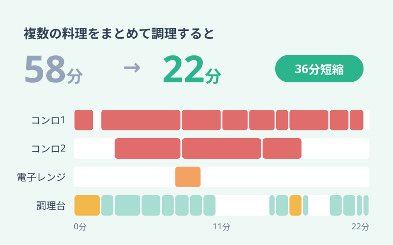

IoTセンサー最適配置（Q-Quest GROW）
QUBO・量子アニーリング・古典ヒューリスティックを組み合わせ、従来手法と比較しながら配置問題の最適化手法を検討・開発しています。
 詳細 →
詳細 →
Portfolio
名古屋大学 情報学部 自然情報学科1年。ソフトウェア開発、数理最適化、AI・機械学習に関心があり、実際の課題を技術で解決するプロジェクトに取り組んでいます。
経済産業省のAKATSUKIプロジェクト「Q-Quest GROW」に採択され、IoTセンサーの最適配置をテーマに、QUBO・量子アニーリング・古典ヒューリスティックを組み合わせた最適化手法の検討・開発を進めています。量子技術を使うこと自体を目的とせず、従来手法との比較や実際の配置問題への適用まで取り組みたいと考えています。
Webマーケティング企業で長期インターンをしており、SEO、LLMO、データ分析、業務改善、社内DXツール開発に携わっています。請求書生成業務の自動化、監査ログや権限制御を含む業務システムの開発、データをもとにした集客施策の改善などを経験してきました。
競技プログラミングでは AtCoder で水色レートです。最近はヒューリスティック最適化にも関心を持っています。TEDxNagoyaU実行委員会ではデザインチームとtecチームのリーダーを務め、運営に関わる人がつながり、動きやすくなる組織づくりに取り組んでいます。
アルバイトでは classmallkids で、小学生にマインクラフトを使ったプログラミングを教えています。
QUBO・量子アニーリング・古典ヒューリスティックを組み合わせ、従来手法と比較しながら配置問題の最適化手法を検討・開発しています。
詳細 →
デザインチームとtecチームのリーダーを兼任。運営に関わるメンバーが迷わず動けるよう、組織づくりに取り組んでいます。
詳細 →広告費データ（BigQuery）と請求ルールから請求書を自動作成し、会計サービスへ登録するWebアプリです。インターン先で開発を担当しました。
 詳細 →
詳細 →
自炊をゲーム感覚で続けられる大学生向け Web アプリ。複数の料理を同時に作る手順を、CPM と貪欲法（リストスケジューリング）で自動で組み立てます。

詳細 →AtCoder のアルゴリズム部門とヒューリスティック部門に参加しています。アルゴリズム部門は 2026年6月に始め、2026年9月に水色に到達しました。
Rating
1377
水色
最高 Rating
1386
4 級
順位
上位 6.03%
参加回数
19 回
Rating
861
緑（暫定）
最高 Rating
861
順位
上位 32.65%
参加回数
4 回